한국사능력검정시험-기본 (2021-02-06 기출문제)
1. (가) 시대의 생활 모습으로 옳은 것은? [1점]
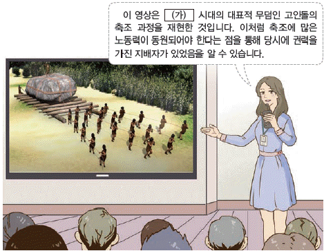
- 우경이 널리 보급되었다.
- 주로 동굴이나 막집에서 거주하였다.
- 반달 돌칼을 사용하여 벼를 수확하였다.
- 실을 뽑기 위해 가락바퀴를 처음 사용하였다.
(정답률: 84%)

2. 교사의 질문에 대한 학생의 답변으로 옳은 것은? [2점]
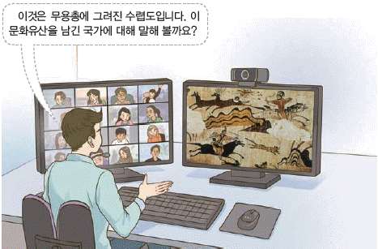
- 22담로에 왕족을 파견했어요.
- 한의 침략을 받아 멸망했어요.
- 신지, 읍차 등의 지배자가 있었어요.
- 빈민 구제를 위해 진대법을 실시했어요.
(정답률: 73%)
3. (가) 나라의 경제 상황에 대한 설명으로 옳은 것은? [2점]
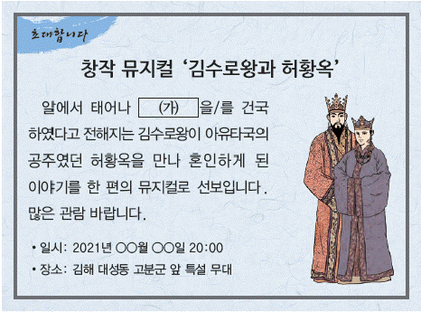
- 낙랑과 왜에 철을 수출하였다.
- 모내기법이 전국으로 확산하였다.
- 물가 조절을 위해 상평창을 두었다.
- 활구라고도 불린 은병을 제작하였다.
(정답률: 86%)
4. (가)에 들어갈 문화유산으로 옳은 것은? [3점]
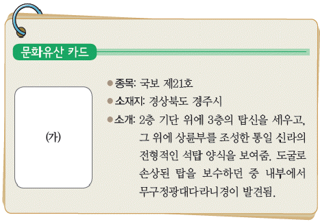
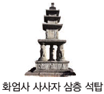
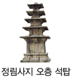
(정답률: 83%)
5. 밑줄 그은 ‘나’의 업적으로 옳은 것은? [2점]
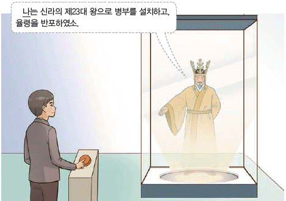
- 녹읍을 폐지하였다.
- 불교를 공인하였다.
- 독서삼품과를 시행하였다.
- 북한산에 순수비를 세웠다.
(정답률: 75%)
6. (가)에 들어갈 문화유산으로 옳은 것은? [2점]
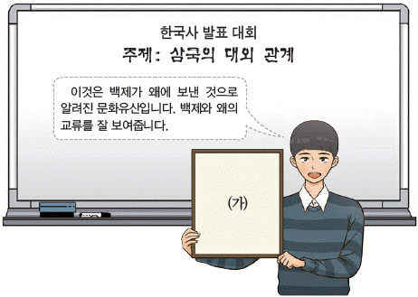
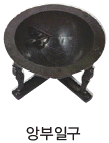
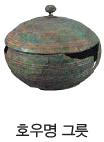
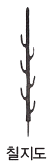
(정답률: 87%)
7. (가)에 들어갈 제도로 옳은 것은? [1점]
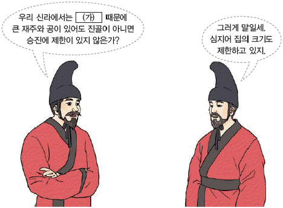
- 화랑도
- 골품 제도
- 화백 회의
- 상수리 제도
(정답률: 88%)
8. 밑줄 그은 ‘전투’로 옳은 것은? [2점]
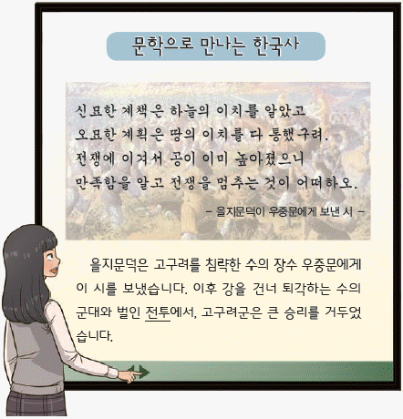
- 명량 대첩
- 살수 대첩
- 황산 대첩
- 한산도 대첩
(정답률: 88%)
9. (가)에 들어갈 내용으로 옳은 것은? [3점]
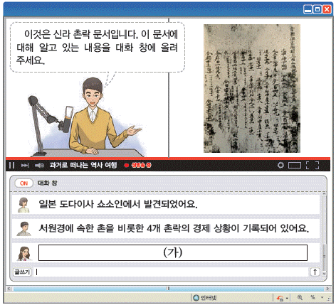
- 단군의 건국 이야기가 수록되어 있어요.
- 병인양요 때 프랑스군에게 약탈당하였어요.
- 유네스코 세계 기록 유산으로 등재되었어요.
- 노동력 동원과 세금 징수를 위해 작성되었어요.
(정답률: 75%)
10. 다음 다큐멘터리에서 볼 수 있는 장면으로 가장 적절한 것은? [2점]
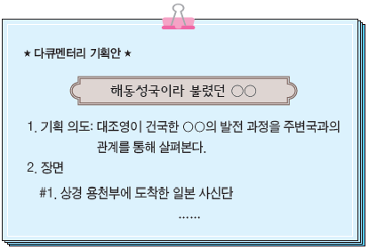
- 6진을 개척하는 김종서
- 처인성에서 싸우는 김윤후
- 당의 등주를 공격하는 장문휴
- 정족산성에서 교전하는 양헌수
(정답률: 66%)
11. 다음 가상 뉴스에서 보도하고 있는 사건이 일어난 시기를 연표에서 옳게 고른 것은? [3점]
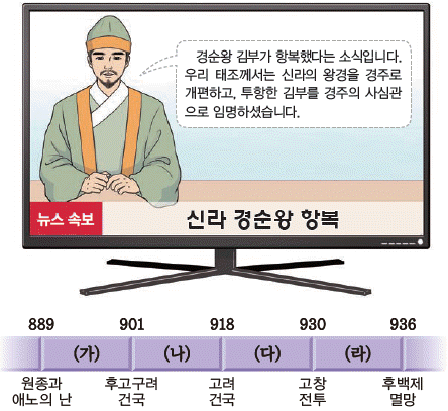
- (가)
- (나)
- (다)
- (라)
(정답률: 53%)
12. (가)에 들어갈 내용으로 옳은 것은? [2점]
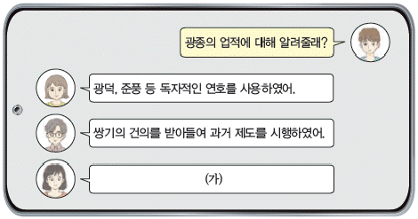
- 훈요 10조를 남겼어.
- 교정도감을 설치하였어.
- 노비안검법을 실시하였어.
- 12목에 지방관을 파견하였어.
(정답률: 78%)
13. (가)에 들어갈 인물로 옳은 것은? [1점]
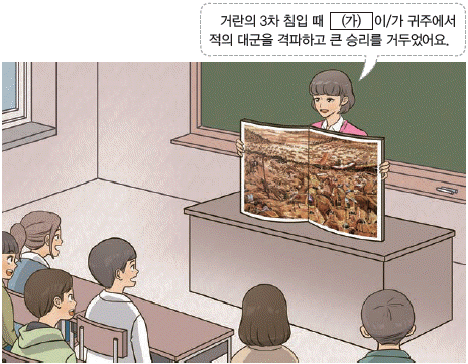
- 서희
- 윤관
- 강감찬
- 최무선
(정답률: 84%)
14. (가) 시기에 있었던 사실로 옳은 것은? [3점]
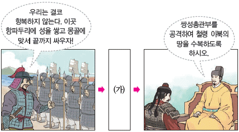
- 별무반이 편성되었다.
- 김헌창이 난을 일으켰다.
- 김부식이 삼국사기를 편찬하였다.
- 지배층을 중심으로 변발과 호복이 유행하였다.
(정답률: 61%)
15. 다음과 같은 기법으로 제작된 문화유산으로 옳은 것은? [2점]
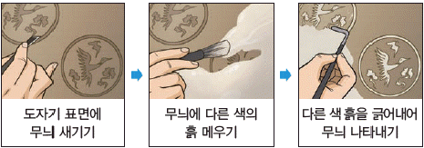
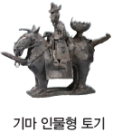
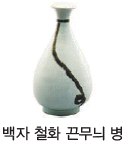
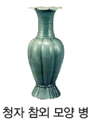
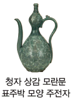
(정답률: 80%)
16. (가)에 해당하는 작물로 옳은 것은? [1점]
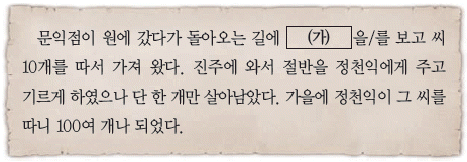
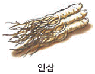
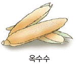
(정답률: 87%)
17. (가)에 들어갈 내용으로 옳은 것은? [2점]
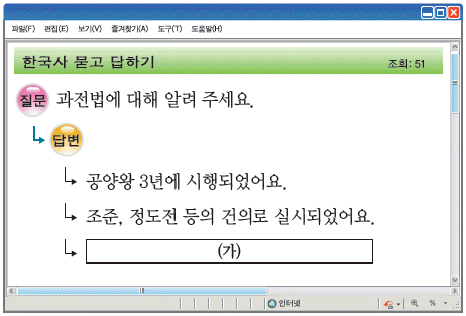
- 공인이 등장하는 배경이 되었어요.
- 토지 소유자에게 지계를 발급하였어요.
- 전지와 시지를 품계에 따라 나누어 주었어요.
- 전·현직 관리에게 토지의 수조권을 지급하였어요.
(정답률: 66%)
18. 다음 퀴즈의 정답으로 옳은 것은? [2점]
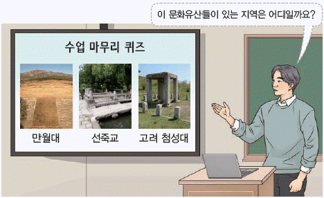
(정답률: 72%)
19. 교사의 질문에 대한 학생의 답변으로 옳지 않은 것은? [2점]
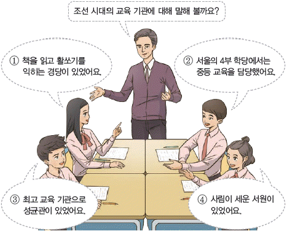
- ①
- ②
- ③
- ④
(정답률: 65%)
20. 다음 학생이 생각하고 있는 기구로 옳은 것은? [2점]
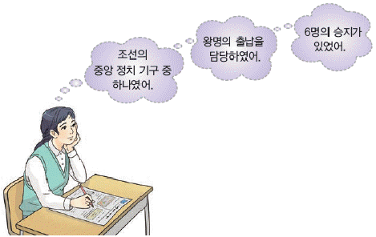
- 사간원
- 사헌부
- 승정원
- 홍문관
(정답률: 64%)
21. (가)에 해당하는 책으로 옳은 것은? [2점]
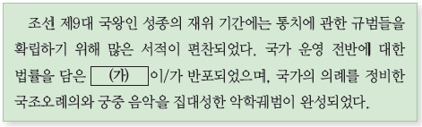
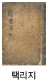
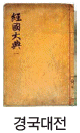
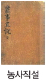
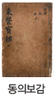
(정답률: 83%)
22. 다음 인물에 대한 설명으로 옳은 것은? [2점]
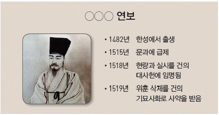
- 거중기를 설계하였다.
- 조선경국전을 저술하였다.
- 소격서 폐지를 주장하였다.
- 만권당에서 원의 학자들과 교류하였다.
(정답률: 66%)
23. (가)에 들어갈 종교로 옳은 것은? [1점]
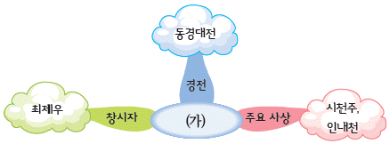
- 동학
- 대종교
- 원불교
- 천주교
(정답률: 76%)
24. (가)에 해당하는 제도로 옳은 것은? [1점]
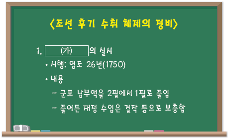
- 균역법
- 대동법
- 영정법
- 직전법
(정답률: 66%)
25. 밑줄 그은 ‘개혁안’의 내용으로 옳은 것은? [3점]
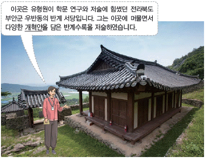
- 균전제 실시
- 정혜결사 제창
- 훈련도감 창설
- 전민변정도감 설치
(정답률: 51%)
26. (가)에 들어갈 장면으로 가장 적절한 것은? [2점]
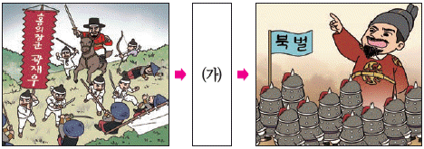
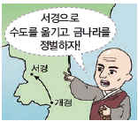
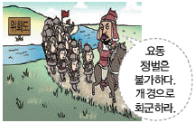
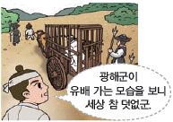
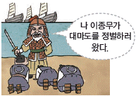
(정답률: 58%)
27. 다음 격문이 작성된 시기의 상황으로 옳은 것은? [2점]
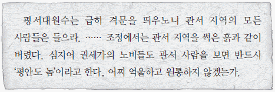
- 무신들이 정권을 장악하였다.
- 신식 군대인 별기군이 창설되었다.
- 최치원이 시무 10여 조를 건의하였다.
- 수령과 향리의 수탈로 삼정이 문란하였다.
(정답률: 62%)
28. (가) 인물이 집권한 시기의 사실로 옳은 것은? [2점]
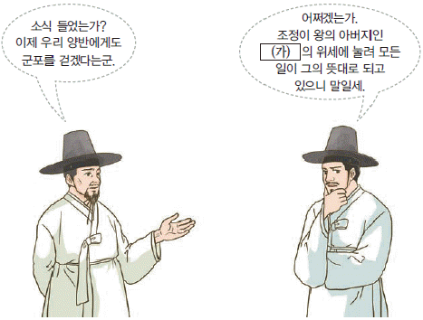
- 장용영이 창설되었다.
- 척화비가 건립되었다.
- 청해진이 설치되었다.
- 칠정산이 편찬되었다.
(정답률: 64%)
29. (가)에 들어갈 문화유산으로 옳은 것은? [1점]
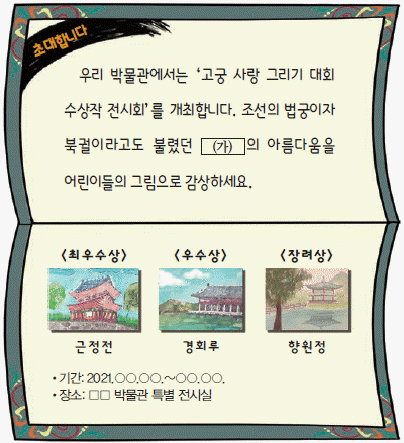
- 경복궁
- 덕수궁
- 창경궁
- 창덕궁
(정답률: 63%)
30. 다음 시나리오의 상황 이후에 전개된 사실로 옳은 것은? [3점]
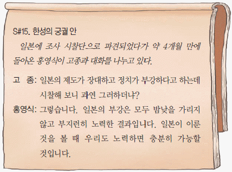
- 삼정이정청이 설치되었다.
- 어재연 부대가 미군에 맞서 싸웠다.
- 구식 군인들이 임오군란을 일으켰다.
- 평양 관민이 제너럴 셔먼호를 불태웠다.
(정답률: 59%)
31. 다음 가상 편지의 (가)에 들어갈 기구로 옳은 것은? [2점]
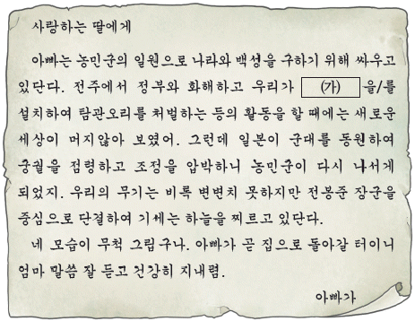
- 기기창
- 집강소
- 도평의사사
- 통리기무아문
(정답률: 64%)
32. 다음 검색창에 들어갈 용어로 옳은 것은? [2점]
- 단발령
- 방곡령
- 삼림령
- 회사령
(정답률: 78%)
33. (가) 인물의 활동으로 옳은 것은? [3점]
- 동양 평화론을 집필하였다.
- 영남 만인소를 주도하였다.
- 조선 의용대를 창설하였다.
- 헤이그에 특사로 파견되었다.
(정답률: 56%)
34. 밑줄 그은 ‘새 조약’에 대한 설명으로 옳은 것은? [2점]
- 운요호 사건을 계기로 체결되었다.
- 최혜국 대우를 처음으로 규정하였다.
- 통감부가 설치되는 결과를 가져왔다.
- 외국과 맺은 최초의 근대적 조약이었다.
(정답률: 54%)
35. 밑줄 그은 ‘이 지역’을 지도에서 옳게 찾은 것은? [2점]
- (가)
- (나)
- (다)
- (라)
(정답률: 59%)
36. (가)에 들어갈 그림으로 적절하지 않은 것은? [1점]
(정답률: 56%)
37. 밑줄 그은 ‘시기’에 볼 수 있는 모습으로 가장 적절한 것은? [2점]
- 제복을 입고 칼을 찬 교사
- 브나로드 운동에 참여하는 학생
- 조선책략 유포에 반발하는 유생
- 치안 유지법 위반으로 구속된 독립운동가
(정답률: 72%)
38. 밑줄 그은 ‘만세 시위’에 대한 설명으로 옳은 것은? [2점]
- 순종의 인산일에 전개되었다.
- 만주, 연해주, 미주 등지로 확산하였다.
- 일제의 황무지 개간권 요구를 철회시켰다.
- 러시아의 내정 간섭과 이권 침탈을 규탄하였다.
(정답률: 60%)
39. (가)에 들어갈 정책으로 옳은 것은? [3점]
- 미곡 공출제
- 새마을 운동
- 산미 증식 계획
- 토지 조사 사업
(정답률: 75%)
40. 다음 자료의 민족 운동에 대한 설명으로 옳은 것은? [2점]
- 대한매일신보의 후원을 받았다.
- 평양에서 시작하여 전국으로 확산하였다.
- 황국 중앙 총상회를 중심으로 전개되었다.
- 독립문 건립을 위한 모금 활동이 추진되었다.
(정답률: 53%)
41. (가)에 들어갈 단체로 옳은 것은? [1점]
- 권업회
- 근우회
- 보안회
- 송죽회
(정답률: 67%)
42. (가)에 들어갈 전투로 옳은 것은? [2점]
- 쌍성보 전투
- 영릉가 전투
- 청산리 전투
- 대전자령 전투
(정답률: 70%)
43. (가)에 들어갈 단체로 옳은 것은? [2점]
- 의열단
- 중광단
- 대한 광복회
- 한인 애국단
(정답률: 54%)
44. 다음 자료를 활용한 탐구 활동으로 가장 적절한 것은? [2점]
- 민족 말살 정책의 내용을 조사한다.
- 조선 형평사의 설립 취지를 살펴본다.
- 교육 입국 조서의 발표 배경을 파악한다.
- 동양 척식 주식회사의 주요 업무를 알아본다.
(정답률: 72%)
45. (가) 인물의 활동으로 옳은 것은? [3점]
- 조선 혁명 선언을 집필하였다.
- 파리 강화 회의에 파견되었다.
- 대조선 국민 군단을 창설하였다.
- 조선말 큰사전 편찬을 주도하였다.
(정답률: 59%)
46. 다음 발언 이후에 전개된 사실로 옳은 것은? [3점]
- 한국 광복군이 창설되었다.
- 김구가 남북 협상을 추진하였다.
- 모스크바 삼국 외상 회의가 개최되었다.
- 여운형이 조선 건국 준비 위원회를 결성하였다.
(정답률: 60%)
47. (가) 정책에 대한 설명으로 옳은 것은? [2점]
- 친일파 청산을 목적으로 하였다.
- 서재필, 이상재 등이 주도하였다.
- 자작농이 증가하는 계기가 되었다.
- 농광 회사가 설립되는 배경이 되었다.
(정답률: 60%)
48. 밑줄 그은 ‘전쟁’에 대한 탐구 활동으로 가장 적절한 것은? [2점]
- 제물포 조약의 내용을 살펴본다.
- 인천 상륙 작전의 과정을 조사한다.
- 경의선 철도의 부설 배경을 파악한다.
- 신흥 무관 학교의 설립 목적을 알아본다.
(정답률: 74%)
49. 다음 일기를 통해 알 수 있는 민주화 운동으로 옳은 것은? [1점]
- 4·19 혁명
- 6월 민주 항쟁
- 부마 민주 항쟁
- 5·18 민주화 운동
(정답률: 64%)
50. 밑줄 그은 ‘정부’ 시기의 사실로 옳지 않은 것은? [2점]
- 3선 개헌안이 통과되었다.
- 베트남에 국군이 파병되었다.
- 경제 개발 5개년 계획이 추진되었다.
- 한일 월드컵 축구 대회가 개최되었다.
(정답률: 56%)